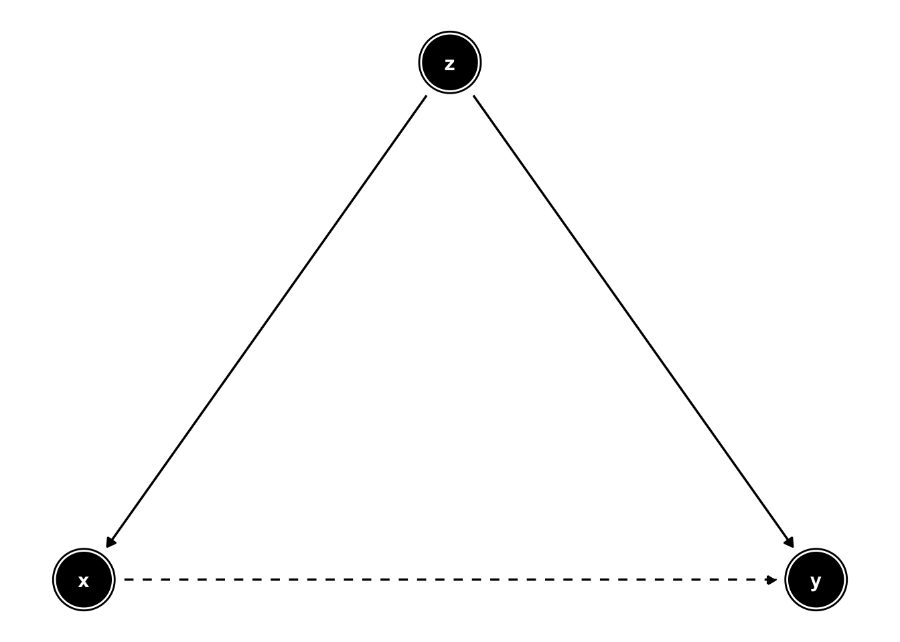
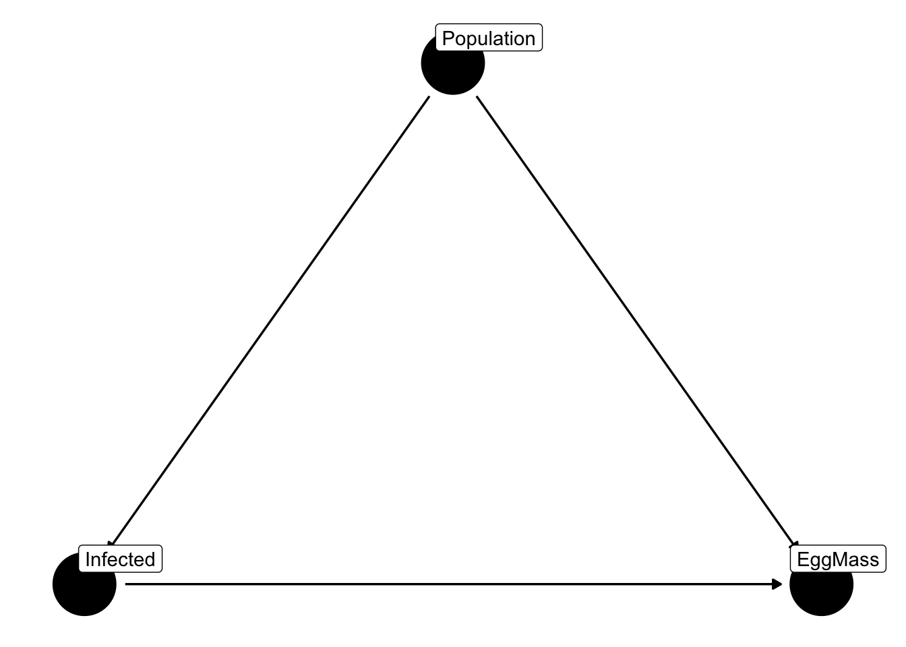

library(FANR6750data)
data(eggdata)
str(eggdata)
#> 'data.frame': 500 obs. of 5 variables:
#> $ id : int 1 2 3 4 5 6 7 8 9 10 ...
#> $ EggMass : num 21.9 20.4 20.2 17.7 21.4 ...
#> $ Infected : int 1 0 0 0 0 0 0 0 0 0 ...
#> $ Population: Factor w/ 2 levels "1","2": 2 1 1 1 1 1 1 1 1 1 ...
#> $ MotherMass: num 50.9 50.2 50 48.4 50.3 ...Lab 6: Experimental design (and causal inference)
FANR 6750: Experimental Methods in Forestry and Natural Resources Research
Fall 2026
Lab 5
Linear Model Assumptions
Linearity
Normality
Homoscedasticity
Independence
Today’s topics
- Confounding
<<<<<<< HEAD 2)
##
Randomization
Matching
Causal assumptions >>>>>>> 9b7657f73b13c6ed640b9c6eec905e74c02a147b
<<<<<<< HEAD
fitm <- lm(EggMass ~ Infected, data = eggdata)
summary(fitm)
#>
#> Call:
#> lm(formula = EggMass ~ Infected, data = eggdata)
#>
#> Residuals:
#> Min 1Q Median 3Q Max
#> -10.462 -1.543 -0.058 1.470 6.932
#>
#> Coefficients:
#> Estimate Std. Error t value Pr(>|t|)
#> (Intercept) 20.2239 0.1498 134.99 <2e-16 ***
#> Infected 0.0721 0.2224 0.32 0.75
#> ---
#> Signif. codes: 0 '***' 0.001 '**' 0.01 '*' 0.05 '.' 0.1 ' ' 1
#>
#> Residual standard error: 2.48 on 498 degrees of freedom
#> Multiple R-squared: 0.000211, Adjusted R-squared: -0.0018
#> F-statistic: 0.105 on 1 and 498 DF, p-value: 0.746eggdata$MotherMass_c <- eggdata$MotherMass - mean(eggdata$MotherMass)
fitm <- lm(EggMass ~ Infected + Population + MotherMass_c, data = eggdata)
summary(fitm)
#>
#> Call:
#> lm(formula = EggMass ~ Infected + Population + MotherMass_c,
#> data = eggdata)
#>
#> Residuals:
#> Min 1Q Median 3Q Max
#> -2.4866 -0.6631 -0.0463 0.6931 2.7581
#>
#> Coefficients:
#> Estimate Std. Error t value Pr(>|t|)
#> (Intercept) 20.0542 0.0596 336.2 <2e-16 ***
#> Infected -1.5319 0.1057 -14.5 <2e-16 ***
#> Population2 2.4534 0.1094 22.4 <2e-16 ***
#> MotherMass_c 0.9846 0.0212 46.4 <2e-16 ***
#> ---
#> Signif. codes: 0 '***' 0.001 '**' 0.01 '*' 0.05 '.' 0.1 ' ' 1
#>
#> Residual standard error: 0.963 on 496 degrees of freedom
#> Multiple R-squared: 0.849, Adjusted R-squared: 0.849
#> F-statistic: 933 on 3 and 496 DF, p-value: <2e-16======= ## Estimating treatment effects
In this lab, we will explore experimental design through the lens of trying to estimate treatment effects. Broadly defined, treatment effects are the magnitude and direction of changes in a variable \(y\) in response to changes in another variable \(x\). So far this semester, we have explored treatment effects using linear models, where we interpret slope coefficients as the change in \(y\) for one unit change in \(x\). But it turns out that is just one type of treatment effect and just one approach to measuring treatment effects. In this lab, we will focus on a specific treatment effect, known as the average treatment effect.

The data set we will use for this lab consists of 500 (fake) measurements of Hawksbill turtle (Eretomochelys imbricata) egg mass. Each observation is the mass of single egg sampled at random from each nest. Nests were monitored at two different study sites and in addition to egg mass, researchers measured the mass (in kilograms) of the mother of each nest and took a blood sample that they used to determine the presence of blood flukes (Spirorchiidae), a trematode parasite known to cause health issues in sea turtles. The data can be loaded and viewed using the following code:
library(FANR6750data)
data("eggdata")
str(eggdata)
#> 'data.frame': 500 obs. of 5 variables:
#> $ id : int 1 2 3 4 5 6 7 8 9 10 ...
#> $ EggMass : num 21.9 20.4 20.2 17.7 21.4 ...
#> $ Infected : int 1 0 0 0 0 0 0 0 0 0 ...
#> $ Population: Factor w/ 2 levels "1","2": 2 1 1 1 1 1 1 1 1 1 ...
#> $ MotherMass: num 50.9 50.2 50 48.4 50.3 ...The researchers who collected these data were interested in determining whether infection by the parasite influences egg mass, which could in turn influence egg and hatchling survival. Because this is a relatively simple data set, we might estimate the effect of infection as the difference in egg mass between infected and uninfected individuals:
infected <- filter(eggdata, Infected == 1)
control <- filter(eggdata, Infected == 0)
# Treatment effect
mean(infected$EggMass) - mean(control$EggMass)
#> [1] 0.07214Based on this result, it appears that infection has a very small effect on egg mass. But is this treatment effect correct?
The code above is an attempt to calculate the average treatment effect (ATE). The ATE is often the treatment effect we are most interested in because it is an estimate of the potential outcomes of the treatment, using each treatment group as the counterfactual for the other group. Of course, the simple calculation above is just the point estimate of the ATE based on this sample and because we know sampling error is always present, we generally also want to quantify uncertainty. We can calculate standard errors and p-values associated with the ATE by formulating the treatment effect as a linear model:
summary(lm(EggMass ~ Infected, data = eggdata))
#>
#> Call:
#> lm(formula = EggMass ~ Infected, data = eggdata)
#>
#> Residuals:
#> Min 1Q Median 3Q Max
#> -10.462 -1.543 -0.058 1.470 6.932
#>
#> Coefficients:
#> Estimate Std. Error t value Pr(>|t|)
#> (Intercept) 20.2239 0.1498 134.99 <2e-16 ***
#> Infected 0.0721 0.2224 0.32 0.75
#> ---
#> Signif. codes: 0 '***' 0.001 '**' 0.01 '*' 0.05 '.' 0.1 ' ' 1
#>
#> Residual standard error: 2.48 on 498 degrees of freedom
#> Multiple R-squared: 0.000211, Adjusted R-squared: -0.0018
#> F-statistic: 0.105 on 1 and 498 DF, p-value: 0.746and see that we get the same estimated treatment effect.
We won’t cover other types of treatment effects in this class but it is worth knowing they exist because sometimes we might want to estimate them. Common treatment effects include conditional treatment effects, average treatment effect on the treated, and average treatment effect on the untreated. You can read more about those treatment effects here or here.
Confounding
There are many reasons the treatment effect we measure might not correspond to the treatment effect we are interested in, but one of the main reasons in the presence of confounders. As we discussed in lecture, confounders are shared causes of both \(x\) and \(y\)

Notice in the graph above that the arrows from \(z\) point towards both \(x\) and \(y\). This means that when \(z\) changes, both \(x\) and \(y\) will also change even if \(x\) does not have any causal effect on \(y\). This is the basis of the old adage “correlation is not causation.” A confounder might lead to a strong association where no causal relationship exists, it might lead us to overestimate a true causal effect (if the effect of \(z\) and \(x\) are in the same direction), or it might underestimate a true causal effect (if the effect of \(z\) and \(x\) are in the opposite directions). In short, the presence of confounders masks whether the observed association between \(x\) and \(y\) (the observed treatment effect) is truly the causal effect of \(x\). In other words, the treatment effect we measured above might not actually be the ATE.
In the context of our example data set, we might feel more confident in concluding that infection does not influence egg mass if we could rule out whether the observed effect might be influenced by confounders.
Notice that the samples come from two populations. Based on previous experience in this system, let’s assume we suspect that disease prevalence differs between the two populations. We can quantify this suspicion using our data:
pop1 <- filter(eggdata, Population == "1")
pop2 <- filter(eggdata, Population == "2")
# Infection rates
mean(pop1$Infected)
#> [1] 0.2366
mean(pop2$Infected)
#> [1] 0.8306Sure enough, individuals in population 2 are almost 4x as likely to be infected as individuals in population 1.
Why does this matter? Because if egg mass also differs between populations (for example, due to environmental differences between the two areas, genetic differences among populations, etc.), then population is acting as a confounder.

It is important to note that our conclusions about population acting as a confounder are based on a very specific hypothesis regarding the relationships between infection, egg mass, and population. Specifically, we assume that population causes differences in both infection rate and egg mass. But that is not the only possible reason for the associations we observed! What if infection causes individuals to move to a different location? In other words, infection causes population. Or what if having smaller eggs caused individuals to be more susceptible to infection?
If you are having trouble coming up with mechanisms that could change the direction of causality, that’s good! You’re thinking like a scientist. But the point is that the arrows we drew above were not based on the statistical associations, but on our understanding of what likely causes what.
Addressing confounding through experimental design
One of the reasons that manipulative experiments are considered the gold standard of causal inference is that we can address confounding through the design of our experiments, which gives the researcher a lot of control to the remove the effects of confounders before any data is collected.
For the purposes of this lab, we will use the eggdata observations as the basis for exploring the principles of experimental design and how they can improve inferences about cause and effect. In effect, we’ll try to mimic the properties of a true, randomized experiment using the eggdata observations.
Remember that in a randomized experiment, we remove the effects of a confounder by randomizing our treatment (in this case infection status) across levels of the confounder (in this case, population). In a true experiment, we might accomplish that objective by holding population constant (i.e., by sampling from only one population). In this scenario, population is the same for every observation so cannot confound the effects of infection. We can pretend to do this using our data by simply fitting the linear model to data from one population or the other:
fmPop1 <- lm(EggMass ~ Infected, data = pop1)
fmPop2 <- lm(EggMass ~ Infected, data = pop2)
summary(fmPop1)
#>
#> Call:
#> lm(formula = EggMass ~ Infected, data = pop1)
#>
#> Residuals:
#> Min 1Q Median 3Q Max
#> -8.690 -1.372 0.105 1.350 7.199
#>
#> Coefficients:
#> Estimate Std. Error t value Pr(>|t|)
#> (Intercept) 19.885 0.144 138.45 < 2e-16 ***
#> Infected -1.361 0.295 -4.61 5.9e-06 ***
#> ---
#> Signif. codes: 0 '***' 0.001 '**' 0.01 '*' 0.05 '.' 0.1 ' ' 1
#>
#> Residual standard error: 2.23 on 315 degrees of freedom
#> Multiple R-squared: 0.0632, Adjusted R-squared: 0.0602
#> F-statistic: 21.2 on 1 and 315 DF, p-value: 5.9e-06
summary(fmPop2)
#>
#> Call:
#> lm(formula = EggMass ~ Infected, data = pop2)
#>
#> Residuals:
#> Min 1Q Median 3Q Max
#> -6.624 -1.488 -0.213 1.503 6.058
#>
#> Coefficients:
#> Estimate Std. Error t value Pr(>|t|)
#> (Intercept) 22.867 0.397 57.6 < 2e-16 ***
#> Infected -1.697 0.435 -3.9 0.00014 ***
#> ---
#> Signif. codes: 0 '***' 0.001 '**' 0.01 '*' 0.05 '.' 0.1 ' ' 1
#>
#> Residual standard error: 2.21 on 181 degrees of freedom
#> Multiple R-squared: 0.0775, Adjusted R-squared: 0.0724
#> F-statistic: 15.2 on 1 and 181 DF, p-value: 0.000136What do you notice about these results? First, we see a large negative effect of infection in both populations, which is not what we saw when the data were combined. The results are also relatively similar between the populations1. These results suggest that population was causing confounding and removing it’s effect got us closer to the causal effect of infection2.
As an example of how we can address confounding by holding things constant, the approach we used above is hopefully useful. But if this were a real research project, this is probably not how we would proceed. Why not? Things to think about:
Why might we not want to simply subset of observational data?
If this were a real study, why might we not want to limit our data collection to one population or the other?
Another way to deal with confounding is randomization. Before we do anything with the eggdata observations, let’s think about what data from a truly randomized experiment would look like.
In observational studies, treatment variable \(x\) and confounder \(z\) are, by definition, correlated. The goal of manipulative experiments is remove that correlation by assigning treatments in a way that breaks the “link” between \(x\) and \(z\). As it turns out, the easiest and most reliable way to do that is by randomly assigning treatments. On average, randomized treatment groups will be the same with regard to confounding variables. In this example, that means we want the same proportion3 of individuals from each population in each infection group.
In the original data, we can easily see that this is not the case:
table(eggdata$Infected, eggdata$Population)
#>
#> 1 2
#> 0 242 31
#> 1 75 152The table() function is a quick way to tally the number of observations within groups and we can see the extreme imbalance of populations within each infection group (this is a different way to assess confounding, but essentially tells us the same thing we learned above).
Again, in a real manipulative we would need to have some method of selecting turtles from both populations and then randomly assign infection status (which may not be possible or ethical). We’ll achieve the same goal instead by randomly selecting observations from our original data in a way that produces balanced treatment groups.
First, we need to determine our sample size, which is constrained by the minimum number of observations we have in each population (because we can’t have more observations than that after we subset our data). In the table above, we can see that in the non-infected group, we only have 31 observations from population 2 so in our subset data, that puts an upper limit on how many observations we can have. In the infected group, we have 75 observations from population 1. That means, in total, our treatment groups (infected vs non-infected) can’t have more than 106 observations (31 + 75) and our goal is to balance those 106 observations so that we have similar proportions of each population in each treatment (this will make more sense below).
We start by creating perfectly balanced groups (equal sample sizes). Since we can’t have more than 31 non-infected individuals from population 2, that places a maximum on our sample sizes. To randomly select observations (which again, is meant to mimic randomizing treatments), we’ll use the slice_sample() function from dplyr:
library(dplyr)
EggSamp <- eggdata %>%
group_by(Population, Infected) %>%
slice_sample(n = 25) %>%
ungroup()This is fairly complicated code. We start with our eggdata data frame and then group observations based on population and infected status using another dplyr function called group_by(). After grouping, all subsequent functions are performed separately on each group. The slice_sample() function then randomly samples n observations from each group, which in this case we set to 25 (slightly smaller than our maximum possible sample size of 31). Finally, we ungroup the data so that R will treat it as a normal data frame.
Let’s look at the “new” data:
table(EggSamp$Infected, EggSamp$Population)
#>
#> 1 2
#> 0 25 25
#> 1 25 25Notice now that the proportion of population 1 vs population 2 in each treatment group is exacly the same, which means population is no longer confounding. Let’s see what our results look like:
fitSamp <- lm(EggMass ~ Infected, data = EggSamp)
summary(fitSamp)
#>
#> Call:
#> lm(formula = EggMass ~ Infected, data = EggSamp)
#>
#> Residuals:
#> Min 1Q Median 3Q Max
#> -6.226 -1.890 0.135 1.688 6.328
#>
#> Coefficients:
#> Estimate Std. Error t value Pr(>|t|)
#> (Intercept) 21.386 0.377 56.71 < 2e-16 ***
#> Infected -1.923 0.533 -3.61 0.00049 ***
#> ---
#> Signif. codes: 0 '***' 0.001 '**' 0.01 '*' 0.05 '.' 0.1 ' ' 1
#>
#> Residual standard error: 2.67 on 98 degrees of freedom
#> Multiple R-squared: 0.117, Adjusted R-squared: 0.108
#> F-statistic: 13 on 1 and 98 DF, p-value: 0.000493Very close to what we estimated from each population!
Before moving on, play with the sample size n and see how it influences your results. Do the parameter estimates change? What about the standard error and p-values? If you run the sampling code several times, how much variability do you see in your estimates as sample size gets smaller?
Perfectly balanced groups is not actually necessary to remove confounding. Instead, we just need the proportions to be the same in each group. In the example above, we had to leave out a lot of population 1 data since our sample size was determined by the smallest observed group (31 non-infected individuals from population 2). Instead of removing all that data, we could have larger sample sizes for population 1 (up to 75) than for population 2:
EggSamp <- eggdata %>%
group_by(Population, Infected) %>%
slice(sample(n(), ifelse(Population[1] == "1", 50, 25))) %>%
ungroup()
table(EggSamp$Infected, EggSamp$Population)
#>
#> 1 2
#> 0 50 25
#> 1 50 25This code is pretty complicated by just note that we are now sampling 50 observations of population 1 (for each treatment group) and 25 for population 2.
What about the estimated ATE:
fitSamp <- lm(EggMass ~ Infected, data = EggSamp)
summary(fitSamp)
#>
#> Call:
#> lm(formula = EggMass ~ Infected, data = EggSamp)
#>
#> Residuals:
#> Min 1Q Median 3Q Max
#> -9.630 -1.959 0.139 1.639 7.672
#>
#> Coefficients:
#> Estimate Std. Error t value Pr(>|t|)
#> (Intercept) 21.046 0.325 64.78 < 2e-16 ***
#> Infected -1.582 0.459 -3.44 0.00075 ***
#> ---
#> Signif. codes: 0 '***' 0.001 '**' 0.01 '*' 0.05 '.' 0.1 ' ' 1
#>
#> Residual standard error: 2.81 on 148 degrees of freedom
#> Multiple R-squared: 0.0741, Adjusted R-squared: 0.0679
#> F-statistic: 11.9 on 1 and 148 DF, p-value: 0.000749As before, change the sample sizes for each group (\(\leq 75\) for population 1 and \(\leq 31\) for population 2) and see what happens to your estimates and standard errors.
Question: In experimental settings, sample sizes are often balanced among treatment groups. However, balanced samples are not necessary for removing confounding. Why is that? In other words, why do we not require equal sample sizes from each population to achieve exchangeable groups? If balanced data is not necessary to remove confounding, why might we still aim for balanced groups when designing an experiment? ****
Admittedly, we did this a bit backwards compared to a true manipulative experiment, where we would have sampled from each population (with sample sizes likely determined by financial or logistical constraints) and then randomly applied our treatment across all observations. However, with this simple example, hopefully you gain some intuition for what confounders are and how we can remove their effects through randomization.
Addressing confounding through matching
<<<<<<< HEAD Balancing observations to address confounding is a common approach to improving causal inference and there are many methods developed to achieve this task. Although we won’t cover all of those methods here, we will look at one common approach known as matching. Essentially, matching pairs observations from one treatment group (e.g. infected) with an observation from the other treatment group (non-infected) based on similarity in the confounding variable. The goal of matching is the produce “balanced” data sets, similar to what we did above.
We’ll briefly look at how to use these methods to meet the exchangeability assumption using “exact matching”, which requires each pair of observations to have the same value of the confounder. This often results in a lot of data being removed (because some observations do not have an exact match) and is difficult when confounding variables are continous (so many or all observations will not have an exact match) or complex cases with multiple confounding variables. In those cases, more advanced methods use distances or weighting to match observations.
Assignment
>>>>>>> 2e9eb87a7713001c6759933df30c885220ac4f14
Even though this lab is about experimental design, not analysis of observational data, it is worth mentioning that balancing observations to address confounding is a common approach to improving causal inference and there are many methods developed to achieve this task. Although we won’t cover all of those methods here, we will look at one common approach known as matching. Essentially, matching is a set of methods to achieve what we did above; this is, produce treatment groups that are “balanced” with regard to confounders. >>>>>>> 9b7657f73b13c6ed640b9c6eec905e74c02a147b
There are many ways to do matching. Above, we did a version of exact matching, where you pair observations in each treatment group (infected vs non-infected) that have the exact same value of the confounder. What you end up with is a data set that is balanced with regard to the confounder. The R package MatchIt can do this for us:
library(MatchIt)
# Matching function (formula specifies treatment ~ covariates)
# Note that we include MotherMass here to also take it into account when creating matched groups
exact_match <- matchit(Infected ~ Population + MotherMass,
data = eggdata,
method = "exact",
estimand = "ATE")
# View matching objects
exact_match
#> A `matchit` object
#> - method: Exact matching
#> - number of obs.: 500 (original), 43 (matched)
#> - target estimand: ATE
#> - covariates: Population, MotherMass
summary(exact_match)
#>
#> Call:
#> matchit(formula = Infected ~ Population + MotherMass, data = eggdata,
#> method = "exact", estimand = "ATE")
#>
#> Summary of Balance for All Data:
#> Means Treated Means Control Std. Mean Diff. Var. Ratio eCDF Mean
#> Population1 0.33 0.886 -1.386 . 0.556
#> Population2 0.67 0.114 1.386 . 0.556
#> MotherMass 50.03 49.785 0.119 1.385 0.041
#> eCDF Max
#> Population1 0.556
#> Population2 0.556
#> MotherMass 0.118
#>
#> Summary of Balance for Matched Data:
#> Means Treated Means Control Std. Mean Diff. Var. Ratio eCDF Mean
#> Population1 0.605 0.605 0.000 . 0.000
#> Population2 0.395 0.395 0.000 . 0.000
#> MotherMass 49.195 49.194 0.001 0.998 0.002
#> eCDF Max Std. Pair Dist.
#> Population1 0.00 0.000
#> Population2 0.00 0.000
#> MotherMass 0.07 0.001
#>
#> Sample Sizes:
#> Control Treated
#> All 273. 227.
#> Matched (ESS) 20.78 21.88
#> Matched 21. 22.
#> Unmatched 252. 205.
#> Discarded 0. 0.
# Extract matched data
matched_data <- match_data(exact_match)
# Fit model to matched data
fmExactMatch <- lm(EggMass ~ Infected, data = matched_data)
summary(fmExactMatch)
#>
#> Call:
#> lm(formula = EggMass ~ Infected, data = matched_data)
#>
#> Residuals:
#> Min 1Q Median 3Q Max
#> -5.205 -1.101 0.016 1.138 3.447
#>
#> Coefficients:
#> Estimate Std. Error t value Pr(>|t|)
#> (Intercept) 20.390 0.401 50.84 <2e-16 ***
#> Infected -1.694 0.561 -3.02 0.0043 **
#> ---
#> Signif. codes: 0 '***' 0.001 '**' 0.01 '*' 0.05 '.' 0.1 ' ' 1
#>
#> Residual standard error: 1.84 on 41 degrees of freedom
#> Multiple R-squared: 0.182, Adjusted R-squared: 0.162
#> F-statistic: 9.12 on 1 and 41 DF, p-value: 0.00433Notice that we get an estimate much closer to the expected ATE than when we fit this to the raw data.
Exact matching does not work as well when there are more than one confounder or confounders are continuous, because finding observations that exactly match in all confounders will become rare and your sample size will end up being very small (which you can see in this example). In these cases, matching can be done based on “distances” between values, which essentially tries to find observations that have very close values of confounders. We’ll explore those options more in a later lab.
Assignment (not for grade)
<<<<<<< HEAD # Assignment
A biologist wants to compare the growth of four different tree species she is considering for use in reforestation efforts. Thirty two seedlings of each species are planted at the same time in a large plot. Heights in meters are recorded after several years.
Within a RMarkdown document, do the following:
- Create an
Rchunk to load the data using:
library(FANR6750)
data("treedata")Create a header called “Hypotheses” and under this header, indicate, in plain English, what the null and alternative hypotheses are. Also use R Markdown’s equation features to write these hypotheses using mathematical notation
Create a header called “ANOVA by hand”. Under this header, perform an ANOVA analysis (degrees of freedom, sums-of-squares, mean-squares, and F-value) without using
aov(). Compute either the critical value of F, or the p-value. Be sure to annotate your codeCreate a header called “ANOVA in R”. Under this header, perform an ANOVA analysis on the data using the
lm()function and then again using theaov()functionUnder a subheader called “ANOVA results”
indicate whether or not the null hypothesis can be rejected at the \(\alpha = 0.05\) level
include a well-formatted ANOVA table using the
broom::tidy()functioncreate a barplot showing the effect sizes and 95% confidence intervals around them
Create a header called “Which means are different?”. Use Tukey’s HSD test to determine which pairs of means differ at the \(\alpha = 0.05\) level. Include a few sentences indicating which pairs are different. If there is an inconsistency between the initial ANOVA results and the post-hoc comparisons, explain why that might be the case
Create a new header called “Reflection”. Under this header, answer the following questions:
You may have noticed that we mostly ignored the other column in the data set,
MotherMass. If that is confounding then the effects we measured after accounting forPopulationmay still be biased with regard to the average treatment effect.
Create an R Markdown file to do the following:
- Create an
Rchunk to load the eggdata using:
library(FANR6750data)
data("eggdata")
eggdata$Infected <- as.factor(eggdata$Infected)Make a figure to show the masses of both infected and non-infected mothers. You should spend some time considering what type of figure would best display this data and it should clearly show both the raw observations as well as useful summaries of each group. At this point in the semester, your figures should be starting to look “presentation” quality, with informative axis labels, etc.
Create a header called “Hypotheses” and under this header, explain whether you think MotherMass is a confounder or not. Your argument should include both ecological reasoning as well as any statistical metrics you feel are helpful to back up your argument4
If MotherMass is not a confounder, what does that imply about the ATE we estimated above (after accounting for the effect of Population)? If it is a confounder, how might you remove it’s effect to better estimate the ATE in this data set?5
Create a new header called “Reflection”. Under this header, answer the following questions: >>>>>>> 9b7657f73b13c6ed640b9c6eec905e74c02a147b
On a 1-10 scale, how would you rate your confidence in the topics covered in this lab?
What lingering questions/confusion about these topics do you still have?
<<<<<<< HEAD - If you used AI for any part of this assignment, do you think it helped? Did it save time? If you did not use AI, do you think it would have helped?
A few things to remember when finishing the exercise:
Be sure the output type is set to:
output: html_documentBe sure to include your name in the
authorfield of the headerBe sure to set
echo = TRUEin allRchunks so we can see both your code and the output
A few things to remember when creating the document:
Be sure to include your name in the
authorfield of the headerBe sure the output type is set to:
output: html_documentBe sure to set
echo = TRUEin allRchunks so that all code and output is visible in the knitted documentRegularly knit the document as you work to check for errors >>>>>>> 9b7657f73b13c6ed640b9c6eec905e74c02a147b
See the R Markdown reference sheet for help with creating
Rchunks, equations, tables, etc.If you use AI on any part of your assignment, you must include the full prompt(s) you used and it’s full answer(s) in a separate section titled “AI assistance” at the end of this document.
Footnotes
though not exactly the same. Why might that be?↩︎
but that’s only true if our assumptions about the causal relationship between variables is true and there are no other confounding variables we are missing↩︎
Not necessarily the same number!↩︎
Note - the
ggdagpackage can be used to create diagrams like the one at the beginning of this lab to show hypothesized relationship between variable. For example, here’s the code used to create the figure above↩︎egg_dag <- dagify( y ~ x + z, x ~ z, exposure = "x", outcome = "y", labels = c(y = "EggMass", x = "Infected", z = "Population"), coords = list(x = c(x = 1, z = 2, y = 3), y = c(x = 2, z = 3, y = 2)) ) ggdag(egg_dag, use_labels = "label", text = FALSE) + guides(fill = "none", color = "none") + theme_dag()This question is meant to move a little beyond what we covered in this lab so just think through different ways you might address this variable using the tools we have learned about so far↩︎